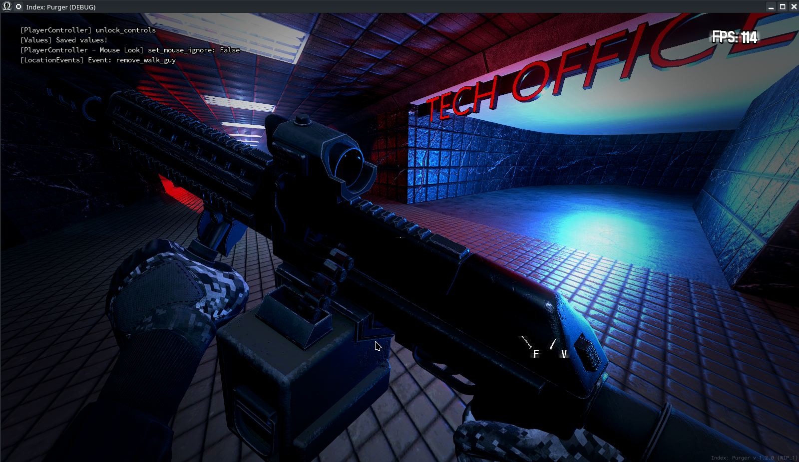
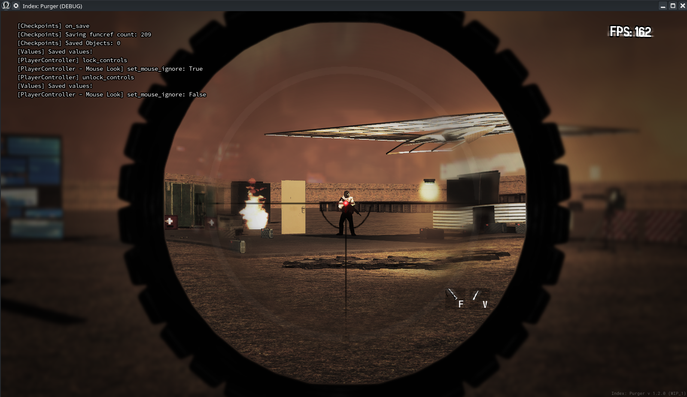
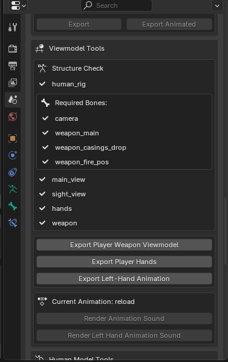
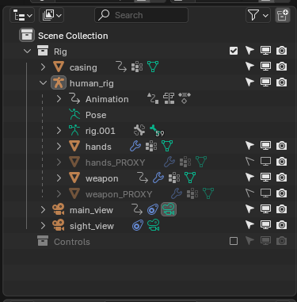

Module: viewmodel
Documentation last edited: October 23, 2025 at 14:33 UTC
Description
Viewmodel (Модель от первого лица) - это специальный тип моделей, которые отображаются от первого лица и обычно представляют либо оружие, либо медицинские предметы. Помимо загрузки модели, он предоставляет множество интересных функций, таких как процедурная анимация, частичные эффекты, анимации для левой руки, анимации прицеливания и т.д.

Структура скриптов
.
├── animation_set.gd
├── animation_sets
│ ├── assault_rifle.gd
│ ├── generic.gd
│ ├── grenade.gd
│ ├── melee.gd
│ └── pump_shotgun.gd
├── autoload
│ └── viewmodel_sight_2D.gd
├── configs
│ ├── animation_event_data.gd
│ └── config.gd
├── helpers
│ ├── animation_key_methods.gd
│ ├── remove_object_in_seconds.gd
│ ├── remove_sound_after_seconds.gd
│ └── weapon_casing_logic.gd
├── model_instance.gd
├── preloader.gd
├── procedural_animation.gd
└── viewmodel.gd
Viewmodel
"./viewmodel.gd"
Это главный файл здесь, тот, что предоставляет API для работы со всей системой. Он выступает в качестве моста между геймплейным кодом и базовой системой оружия, управляя полным жизненным циклом моделей оружия (или любых моделей от первого лица), анимаций и визуальных эффектов.
- Обрабатывает полную настройку оружия.
- Предоставляет высокоуровневое воспроизведение анимаций (достать, убрать, выстрел, перезарядка).
- Управляет frame-perfect колбэками и триггерами анимаций.
- Предоставляет высокоуровневые функции для работы.
- Использует
ViewmodelModelInstance
для инициализации модели.
- Использует
ViewmodelProceduralAnimation
для координации процедурных анимаций.
Пример
# Инициализация viewmodel
viewmodel = Viewmodel.new()
viewmodel.load_weapon(
weapon_anim_class, main_node, player, camera_transform_manager)
animation_set = viewmodel.get_animation_set_controller()
# Подключение событий анимации
viewmodel.add_animation_event_callback(
hide_enough_event, funcref(self, "hide_enough")
)
viewmodel.add_animation_event_callback(
take_enough_event, funcref(self, "take_enough")
)
viewmodel.add_animation_event_callback(
shoot_event, funcref(self, "on_shoot")
)
# Смена рук
viewmodel.change_hands(LoadoutSystem.get_viewmodel_hands())
# Инициализация состояния оружия
animation_set.hide()
viewmodel.anim_player.advance(10000.0)
viewmodel.stop_all_sounds()
# Доставание
animation_set.take()
# Воспроизведение другой анимации
viewmodel.play_animation("look")
# Выстрел
animation_set.shoot()
Viewmodel Model Instance
"./model_instance.gd"
Загружает и позиционирует модели оружия от первого лица. Управляет скелетами оружия для анимаций и attachment'ов. Создаёт и поддерживает сложную структуру нод для рендеринга viewmodel. Другими словами, просто инициализирует весь этот нодовый беспорядок.
- Инициализирует модель.
- Создаёт и управляет точками крепления для эффектов (дульная вспышка, выброс гильз).
- Работает с позами костей, трансформациями и blending'ом анимаций.
- Позиционирует оружие относительно кости камеры для правильного вида от первого лица.
- Управляет дульными вспышками, эффектами выброса гильз и другими частичными эффектами оружия.
- Контролирует огни дульных вспышек с затуханием цвета.
- Реализует оптимизированные по производительности пулы для частиц и физических объектов.
- Конвертирует стандартные материалы в шейдерные материалы для viewmodel.
- Применяет правильные настройки поля зрения ко всем визуальным элементам.
- Предотвращает clipping оружия через геометрию.
- Настраивает правильные слои рендеринга для оружия от первого лица.
Viewmodel Procedural Animation
"./procedural_animation.gd"
Создает органичное движение оружия, которое реагирует на действия игрока, факторы окружающей среды и физику - делая оружие физичным и отзывчивым, а не статичным и роботизированным.
- Естественное раскачивание и bounce, синхронизированные с движением игрока.
- Управляемое мышью вращение и смещение оружия.
- Плавное blending'ование между различными состояниями движения.
- Анимации бега, ходьбы, приседания, медленной ходьбы.
- Наклон и смещение оружия во время прыжков и падений.
- Плавные переходы между стрельбой от бедра и прицеливанием.
- Автоматическое отдаление оружия при приближении к стенам/объектам.
Autoload:
ViewmodelPreloader
Этот автолоад позволяет предзагружать GLTF-модели viewmodel'ей для более простого управления ассетами и оптимизации.
- Динамическая загрузка и кэширование 3D-моделей оружия.
- Система отдельных моделей рук с вариантами качества.
- Эффективная загрузка/выгрузка ассетов оружия.
- Контроль анимаций левой руки, чтобы они были общими для нескольких viewmodel'ей.
Пример
# Контроль анимации левой руки
ViewmodelPreloader.play_left_animation("grenade_throw")
ViewmodelPreloader.stop_left_animation()
# Стандартная схема загрузки оружия
var model = ViewmodelPreloader.create_model("assault_rifle", parent_node)
var hands = ViewmodelPreloader.get_hands("male_hands")
Autoload:
ViewmodelSight2D

Реализация 2D-прицела для viewmodel'ей, используемая в данный момент BSR-10.
Пример
ViewmodelSight2D.show()
ViewmodelSight2D.hide()
ViewmodelSight2D.set_offset(13, 37)
Экспорт собственного viewmodel'а


0. Убедись, что иерархия правильная.
- А также что ты используешь правильный риг рук из
"res://.dev_sources/viewmodels/"
.
1. Убедись, что у тебя есть соответствующим образом названные actions.
2. Нажми
"Export Player Weapon Viewmodel"
.
3. Та-да.
Для большего количества примеров просто изучи .blend файлы в
"res://.dev_sources/viewmodels/"
.
General Information
Root directories list
assets, docs, src
Nodes
ViewmodelSight2D
weapon_casing_logic
remove_sound_after_seconds
ViewmodelAnimationKeyMethods
remove_object_in_seconds
ViewmodelPreloader
Classes
ViewmodelModelInstance
ViewmodelAnimationSet
Viewmodel
generic
grenade
pump_shotgun
melee
assault_rifle
ViewmodelProceduralAnimation
Resources
ViewmodelAnimationEventData
ViewmodelConfig
Other Scripts
None